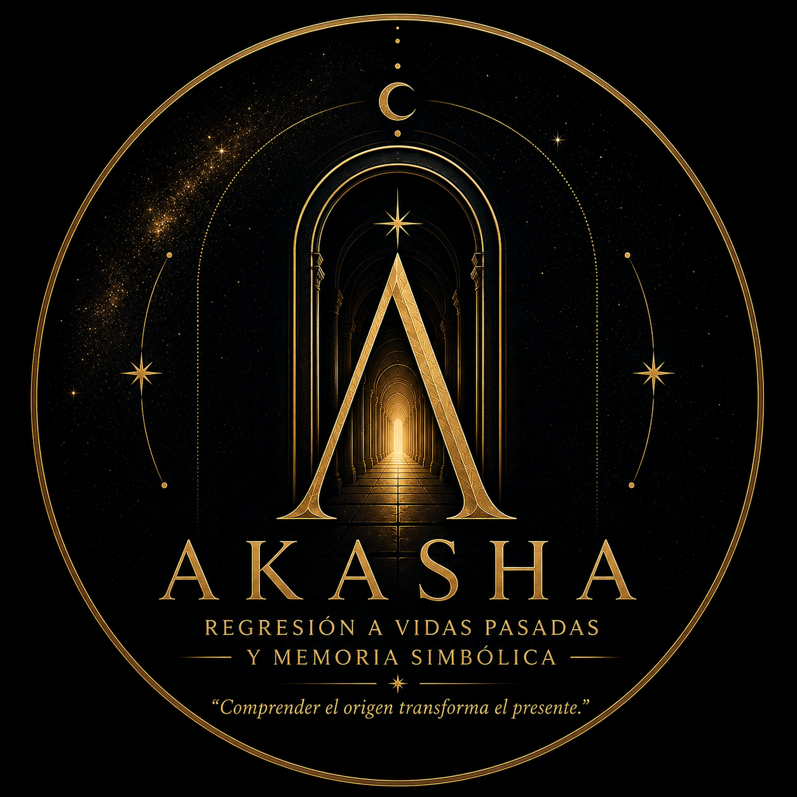

Formulario de Exploración Personal
Este formulario forma parte del proceso previo a la sesión.
No es necesario responder todo de manera perfecta.
La intención es comprender mejor tu historia, tu momento actual y aquello que deseas trabajar.
Toda la información será tratada con absoluta confidencialidad y respeto.